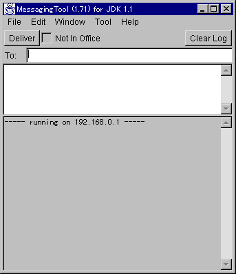
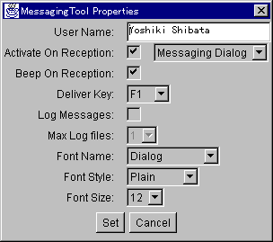
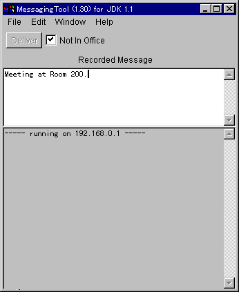
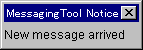
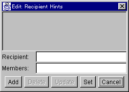

Contents:
When you run MessagingTool, MessagingTool window below will appear. Fig.2 MessagingTool window
At first, you need to specify your user name which is used as the sender name of a message. Show Properties window below by choosing Properties ... menu from Edit menu, and type your name in User Name field, and click Set button.1.2 Sending Hello Message Fig.3 Properties window
Then click Deliver button. The message("Hello") is sent to 192.168.0.2, and the log of sending message is shown as Fig.5 below:
If you cannot find another MessagingTool, try sending a message to your machine by specifing your IP address. Please note that your IP address is shown in the first line in the Log Area. Fig.6 shows the result:
In Fig.6, the Hello message is sent to the same machine. Please note that the received message is shown as well as the log of sending the message. Because you recived the message you sent, a Messaging Dialog window is also popped up. About Messaging Dialog window, please see 2.8.
Suppose that 192.168.0.2 is Emiko's PC. So type in Emiko and 192.168.0.2 as Name and Address respectively:
Then click Add button and Set
button. Now Emiko is added in the Cache File, Emiko can be used in To:
field instead of 192.168.0.2:
All entries in the Address Cache can be poped up as Recipient Hint if you click the right-most mouse button over the To: label.
Recipients are specified by name in To: field. The name may be any of the followings:2.2 Sending A Message
- The recipient name may be an arbitrary name that is described along with an associated network address of the recipient's machine in the address cache file. The contents of the address cache file can be modified with Address Cache ... from Edit menu.
- You may specify an IP address of the recipient's machine. An example would be 129.249.53.58.
- You may also specify the host name of the recipient's machine. An example would be ncc1701.dsp.ksp.fujixerox.co.jp.
To send a message, fills in To: field and the Message Subwindow, and then click Deliver button.2.3 Receiving A MessageThe To: field is a list of recipients separated by commas(,). If there are multiple recipients, To: field is automatically included in the text of the message as it is sent to each recipient.
When Deliver button is clicked, a header is put in the Log Subwindow indicating what time the message was sent and to whom it was sent. For each recipient the tool displays the result of the attempted message delivery. If the delivery was successful, the result is "(received)"; otherwise the result is "(failed)". If the message was successfully received by at least one recipient, the text of the message is then displayed in the Log Subwindow, and the Message Subwindow is cleared.
The MessagingTool does not eliminate duplicated recipients, so if a recipient appears more than once in To: field, the recipient will receive more than one copy of the message.
When sending a message, the MessagingTool uses the contents of User Name field in the Properties window (Fig.3) as the sender name.
If the Message Subwindow is empty, a empty message will be sent but the recipient's MessagingTool will not display the message or notify the recipient. This allows the sender to determine if the recipient is running the MessagingTool before actually sending a message.
When a message is received, a header appears in the Log Subwindow indicating what time the message was received and who it was from, following by the text of the message.2.4 Properties WindowIf Not In Office checkbox is checked, Recorded Message Subwindow becomes visible while To: field becomes invisible. If the MessagingTool receives a message while Not In Office checkbox is checked, it will send a recorded message back to the sender. The recorded message is specified in Recorded Message Subwindow. If Recorded Message Subwindow is empty, a standard recorded message which is "I'm not in my office" will be sent back. All recorded messages are labeled with the phrase "Recorded Message:".
 Fig.11 Check Not In Office If Activate On Reception checkbox in the Properties window is checked, either the Reception Dialog window or a Messaging Dialog window will show up each time a message is received.
2.5 Address Cache windowFig.12 Properties window User Name is used as sender name.
If Activate On Reception checkbox is checked, either the Reception Dialog window or a Messaging Dialog window will show up each time a message is received.
 Fig.13 Reception Dialog window If Beep On Reception is checked, a beep sound is played each time a message is received. For PC, you need a Sound card to play beep sound.
Deliver Key is used to send a message. Instead of clicking Deliver button, you can send a message by pressing a function key specified here.
Log Messages is used to save all messages into files. If Log Messages is checked, Max Log Files will be enabled so that you can specify how many files are used for saving messages. Eveytime when you invoke the MessagingTool, a new file is selected for saving messages and the oldest file will be deleted if the total number of files exceeds over the value of Max Log Files.
Font Name, Font Sytle, and Font Size are used to specify what kind of font should be used for MessagingTool.
2.6 Recipient Hints WindowFig.14 Address Cache window In Name field, a name is specified. In Address field, either of an IP address or an host name which can be found via DNS must be specified. Sort Key is used to sort names for the popup hints and the OnLine list. Normally you can leave it blank.
Add will register Name, Soft Key, and Address.
Delete will delete a selected pair of Name, Sort Key, and Address.
Update will update Sort Key and Address of a selected name.
Cancel will cancel all modifications
Set will save all modifications into the Address Cache file.
Recipient Hints window is used to add addtional popup hints for To: field. To show it up, choose Recipient Hints ... from Edit menu. To show the popup hints, click over To: field label with the rightmost button of mouse.2.7 Recorded Message Hints Window Fig.15 Recipient Hints window In Recipient field, a string is specified. For example, you can specify a name of recipient. Or you can specify multiple recipients such as "Yoshiki, Emiko". In this case, you might leave Members field blank. If you leave Members field blank, a string specified as Recipient field will be just copied into To: field when the string is selected from a Popup menu.
Suppose that you want to group some recipients into a group and you want to have the group name in the Popup menu rather than a long string of members such as "Emiko, Takashi, Tadao, David, Smith, Lewis". In this case, specify a group name into Recipient field and specify members into Members field:
Recipient: MyGroupIn this way, "MyGroup" will be listed in the Popup menu, but selecting it will copy Members into To: field.
Members: Emiko, Takashi, Tadao, David, Smith, LewisAdd will register a string.
Delete will delete a selected string.
Update will replace a selected string with a new string.
Cancel will cancel all modifications.
Set will save all modifications into the Recipient Hints file.
In Message field, a recorded message is specified. Now only one line message is allowed.
Add will register a recorded message.
Delete will delete a selected recorded message.
Update will replace a selected recorded message with a new recorded message.
Cancel will cancel all modifications.
Set will save all modifications into the Recorded Message Hints file.
You can also show up a existing Messaging Dialog window by choosing it from Messaging Dialog in Window menu.
Note that a sending window has only Message subwindow so that you can enlarge the sending window to type in a long message.
In Fig.19, four persons are listed: All of them are running MessagingTool. When one of them checks Not In Office checkbox on his or her MessagingTool, "x" will be appeared in front of his or her name.
3.1 Automatically Updating Address Cache
If necessary, you can change the automatically registered name with Address Cache window.
When a message is broadcasted, "[broadcast message]" string will be always prepended to the original message.
When a MessagingTool receives a relay broacast message, it will broacast the message again to its local sub-network, and the message will be relayed to all recipients registered in the Address Cache of the MessagingTool.
You might be afraid that a message might be repeatedly sent over all sub-networks. Don't worry about it. Actually algorithm for relay broacast is more sophicated so that a message will never be processed twice by a MessagingTool.
Because of the nature of broadcast, you must be very careful about a message: All persons running MessagingTool will receive the message.
Note that if you broadcast a message, its recipients will never send recorded messages back to you even if some of them actually checks Not In Office checkbox.
By clicking Search button, a string typed in Name field will be sent to other MessagingTool as query. On reception of the query, each MessagingTool checks whether the string is included either in the name specified in the Sender Name field in Properties Window or in E-Mail address which can be found only for a registered copy of MessagingTool. If the string is included, the MessagingTool will report its IP address back.
Note that any character will be interpreted literally except its case. No special characters such as '*' or '?' is not supported.
There is no server which creates a meeting room like a web-based chat system where a chat room is created. A meeting room of MessagingTool exists in each MessagingTool.
If you click over Room Name: label with the right-most mouse button, a list of open meeting rooms will be popped up. Choose one of open meeting rooms or type in a room name. Then click Join button. Private Room: checkbox means that you are going to join a private meeting room which will never be listed in the popup menu.
To delete a meeting room, choosing Delete Meeting Room ... from Tool menu.